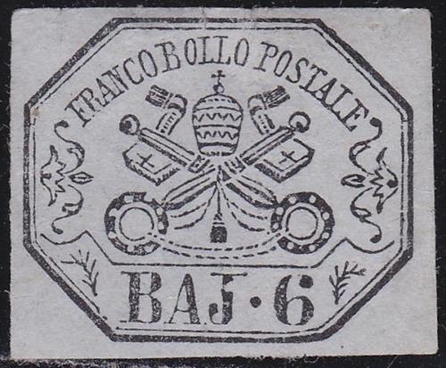
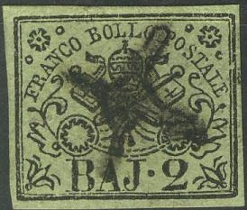
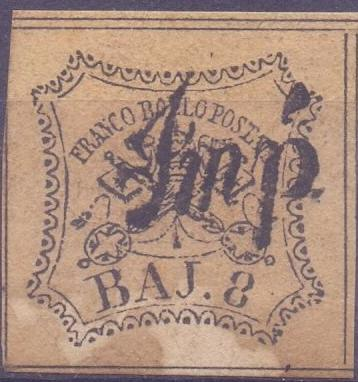

{kind=link}



Stato Pontificio, Kirchenstaat, Etats pontificaux
Return To Catalogue - 1851 issue, forgeries - 1851 issue, 50 b and 1 Sc values - 1867 issue and miscellaneous - Italy
Note: on my website many of the
pictures can not be seen! They are of course present in the
catalogue;
contact me if you want to purchase the catalogue.
1/2 b (Baj Mezzo) black on grey (or black on lilac) 1 b black on green 2 b black on green 3 b black on brown (or black on yellow) 4 b black on yellow (or black on brown) 5 b black on rosa 6 b black on grey 7 b black on blue 8 b black
These stamps were printed in sheets of 100 (in four panes of 25). The values 1/2 b, 1 b, 3 b, 4 b and 8 b have dividing lines between the individual stamps.
Value of the stamps |
|||
vc = very common c = common * = not so common ** = uncommon |
*** = very uncommon R = rare RR = very rare RRR = extremely rare |
||
| Value | Unused | Used | Remarks |
| 1/2 b | *** | *** | Tete-beche pairs exist: RRR |
| 1 b | *** | ** | |
| 2 b | ** | * | |
| 3 b | *** | *** | |
| 4 b | R | *** | |
| 5 b | *** | ** | |
| 6 b | R | *** | |
| 7 b | RR | R | |
| 8 b | R | *** | |
Some stamps were printed front AND backside, an example:


Certified genuine stamp with impression on the back.


Printed in front and back. This might be a Fournier forgery
(always with the paper too pinkish). In some copies (such as the
one here), the 'A' has a missing bottom left part.
Bisected 1 b stamp with 'BOLOGNA' straight line cancel, reduced
size
The most common cancel is the grill cancel (as shown above). It is usually struck in black, but I have also seen it in red:
Red grill cancel of Rome, reduced size
The grill cancel is usually lozenge shaped, though rectangular grills also exist. Reversed lozenge shaped cancels also exist (lines in the opposite direction).
I've been told that the above cancel, a cross, was used in Ferrara. Similar cancels exist for Comacchio (or Commachio?).

Most likely a Gomacchio 'Cross cancel'

Lines cancel from Monterubbiano?
Possibly a cancel from Forolimpopoli consisting of a lozenge with
9 subdivisions

Could this be a cancel from Civita Castellana?

An "Impe" cancel (Impostazione). According to the book
Roman States Forgeries, the issue of 1867-1868' by F.J.Levitsky
and F.A.Jenkins, there are four slightly different types for the
cities of Albano, Bologna, Fano and Ferrara. This cancel is known
to have been forged on genuine stamps.

"PD" in a box cancel from Rome
Townname 'ANCONA' and 'CORNETO' in a straight line cancel,
reduced sizes
Townname 'MOLINELLA' cancel in a straight line, reduced size

Cesena cancel (Fournier made a forged cancel but with wrong
inscription "CESANA" by the way).
Letter with "ROMA" cancels and French "E PONT.
MARSEILLE" entry cancel; also a British "PAID"
cancel.

Unlisted cancel; circle with lines in it. Maybe a bogus cancel.
Click here for the 50 b and 1 Sc values of this set.
Click here for Papal States, 1867 issue (similar issues, but values in 'Cent' and Vatican
I've been told that the next stamp in the value 10 b is an essay:
Older stamp albums often had premade spaces where to put the stamps. Some of the stamps were cut to shape to fit into these albums. Examples of some mutilated stamps of the Papal States:


Stamps - Francobolli - Timbres-Poste - Briefmarken
{kind=link}
{kind=link}
{kind=link}